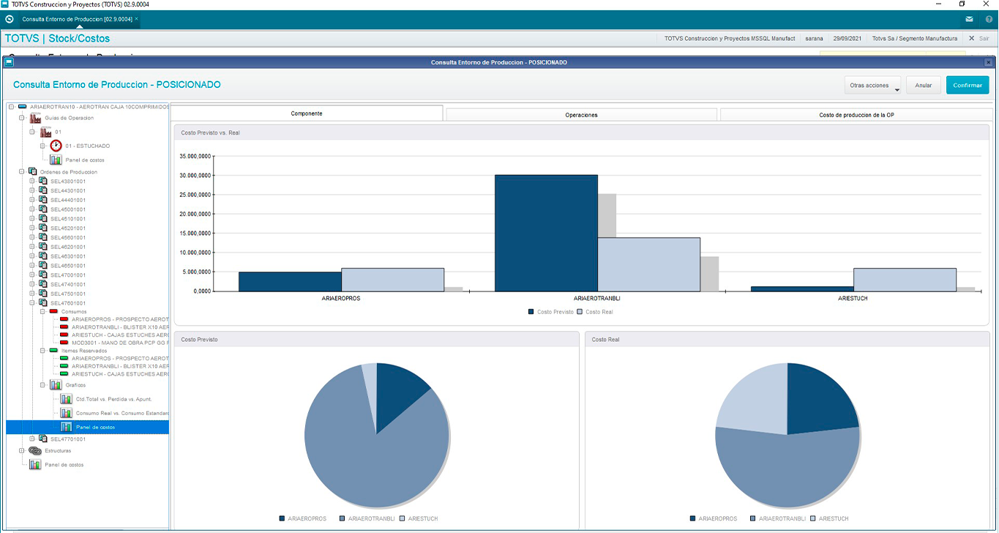
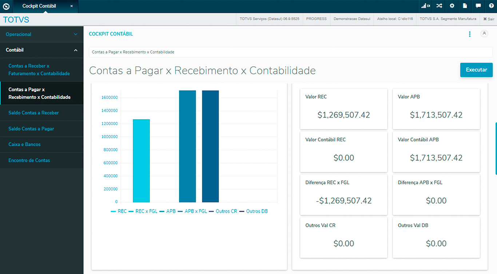
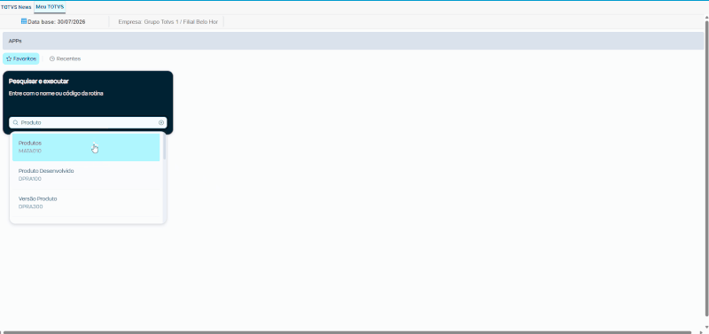

Implementación
Relevamiento, parametrización, migraciones, pruebas, capacitación y salida productiva.
Implementación, soporte y desarrollo para evolucionar el ecosistema TOTVS con procesos sólidos, integraciones confiables y acompañamiento técnico.

Relevamiento, parametrización, migraciones, pruebas, capacitación y salida productiva.
Análisis funcional y técnico, incidentes, mejoras, actualizaciones y continuidad operativa.
ADVPL/TLPP, puntos de entrada, APIs, automatizaciones, informes y extensiones.


Compras, ventas, stock, finanzas, contabilidad, producción y módulos específicos.
Formularios, workflows, portales, aprobaciones y experiencia colaborativa.
Portales, marketplaces, logística, BI y aplicaciones propias conectadas al ERP.
Contanos versión, módulos, contexto y prioridad para orientar la primera conversación.